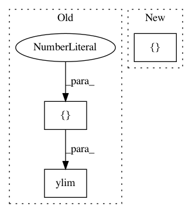

4e295f0293da827719acdfa9b36875871e5e08b7,examples/bayesian_optimization.py,,,#,10
Before Change
if n_query == 0:
plt.ylabel("Expected improvement")
plt.plot(X, 5*utility, c="r")
plt.ylim([-0.1, 1])
// query
query_idx, query_inst = optimizer.query(X)
optimizer.teach(X[query_idx].reshape(1, -1), y[query_idx].reshape(1, -1))
After Change
max_PI_tr = partial(max_PI, tradeoff=tr)
acquisitions = zip(
[PI_tr, EI, UCB],
[max_PI_tr, max_EI, max_UCB],
)
In pattern: SUPERPATTERN
Frequency: 3
Non-data size: 3
Instances
Project Name: modAL-python/modAL
Commit Name: 4e295f0293da827719acdfa9b36875871e5e08b7
Time: 2018-04-23
Author: theodore.danka@gmail.com
File Name: examples/bayesian_optimization.py
Class Name:
Method Name:
Project Name: DistrictDataLabs/yellowbrick
Commit Name: 89469e47d86e0931d9b50448e663a250d357de91
Time: 2016-11-05
Author: benjamin@bengfort.com
File Name: yellowbrick/classifier.py
Class Name: ROCAUC
Method Name: finalize
Project Name: glm-tools/pyglmnet
Commit Name: 032d54757279827031ef7a8ad2e148333f3b8291
Time: 2017-03-31
Author: mainakjas@gmail.com
File Name: examples/plot_group_lasso.py
Class Name:
Method Name: